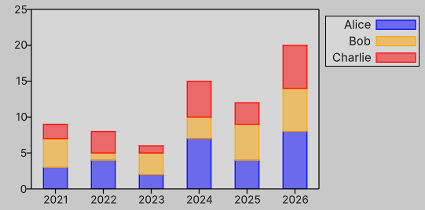

Stacked bar plot demo
Below is a simple example showing how to create a stacked bar plot using [PlotWithBoxes][plot-with-boxes].

var graph = new Graph()
{
XAxis = { Min = -0.5f, Max = 5.5f, Tics = Tics.Manual(new Tic[]
{
(0, "2021"),
(1, "2022"),
(2, "2023"),
(3, "2024"),
(4, "2025"),
(5, "2026"),
})},
YAxis = { Max = 25 },
Theme =
{
Key = { Position = KeyPosition.OutRightTop },
Tics =
{
Bits = (int)(BorderBits.Bottom | BorderBits.Left),
Direction = TicsDirection.Out
},
Grid = { Display = DisplayStyle.None },
},
};
graph.Canvas.style.backgroundColor = new Color(1, 1, 1, 0.25f);
graph.Key.style.backgroundColor = new Color(1, 1, 1, 0.25f);
var alice = new Dictionary<float, float>
{
[0] = 3,
[1] = 4,
[2] = 2,
[3] = 7,
[4] = 4,
[5] = 8,
};
var bob = new Dictionary<float, float>
{
[0] = 4,
[1] = 1,
[2] = 3,
[3] = 3,
[4] = 5,
[5] = 6,
};
var charlie = new Dictionary<float, float>
{
[0] = 2,
[1] = 3,
[2] = 1,
[3] = 5,
[4] = 3,
[5] = 6,
};
static List<AABB> stack(Dictionary<float, float> self, float width, params Dictionary<float, float>[] others)
{
var w = 0.5f * width;
var result = new List<AABB>();
foreach (var (k, v) in self)
{
var y0 = 0f;
foreach (var o in others)
{
y0 += o.GetValueOrDefault(k);
}
var box = new AABB(
min: math.float2(k - w, y0),
max: math.float2(k + w, y0 + v)
);
result.Add(box);
}
return result;
}
graph.PlotWithBoxes(stack(alice, width: 0.5f), title: "Alice").SetStyle(3);
graph.PlotWithBoxes(stack(bob, width: 0.5f, alice), title: "Bob").SetStyle(6);
graph.PlotWithBoxes(stack(charlie, width: 0.5f, alice, bob), title: "Charlie").SetStyle(1);